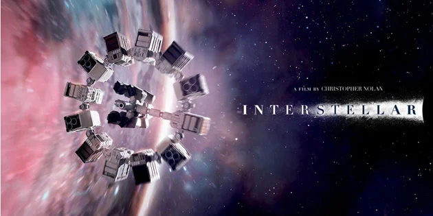

Un viaje épico a través del espacio y el tiempo
Dirigida por Christopher Nolan, Interstellar es una obra maestra cinematográfica que explora el vínculo entre el amor humano, la ciencia y la supervivencia de la especie. Con un elenco estelar que incluye a Matthew McConaughey, Anne Hathaway y Jessica Chastain, esta película te lleva a través de agujeros negros, planetas extraños y más allá del horizonte de eventos.
Matthew McConaughey
Como Cooper
Anne Hathaway
Como Brand
Jessica Chastain
Como Murph
Michael Caine
Como Prof. Brand
Interstellar toca temas profundos como la teoría de la relatividad, los límites del amor, la exploración espacial y el sacrificio por un bien mayor. Cada uno de estos elementos se combina para ofrecer una experiencia cinematográfica inolvidable.